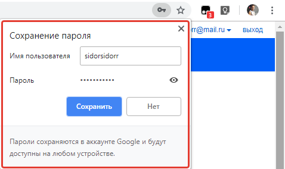
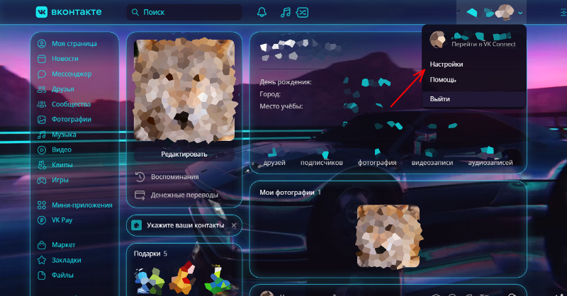
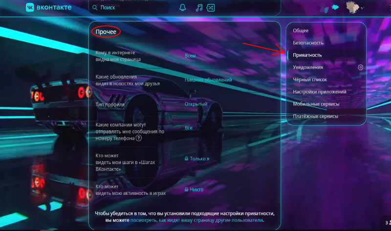
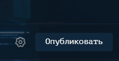

В данной статье я рассмотрю самые частые ошибки пользователей при пользовании соцсетями, сделаю я это на примере ВКонтакте, но во многих соцсетях действуют теже принципы и правила.
1.Соблюдайте осторожность при пользовании соцсетями на посторонних устройствах
Речь идет не о том, что вы можете закачать вирусняк (не без этого, имейте ввиду). Нет, но при использовании того же ВКонтакте вам вылазиет вот такое коварное окошечко:

Ни в коем случае не сохраняйте пароль если не уверены в других пользователях компьютера, вам могут переписать информацию на главной странице, что достаточно сложно заметить,написать вашим друзьям всё что в голову взбредёт, что может испортить вам отношения со знакомыми и наконец просто отобрать акаунт сменив пароль.
2.Настройте кофиденциальность
Часто случается такое, что при пролистывании ленты новостей в Вконтакте вы видите пост который вам понравился, но не хотите его лайкать, потому что не знаете реакцию друзей на этот пост в их ленте с пометкой: «Ваш друг Саша прокомментировал эту запись/ Вашему другу Саше понравилась эта запись».
Чтобы безбоязнено оценивать различные посты и статьи вам необходимо зделать следуещее:1.Перейти в настройки акаунта.

2.Зайти в настройки приватности.

3.Пролистать до раздела "Прочее".
4.Настроить данные в разделе пункты по своим предпочтениям.
3. Обдуманно публикуйте записи

Марина Иванова (фамилия изменена) из Нижнего Тагила работала медсестрой и в
один из дней стала антигероем Рунета за выложенную в социальной сети фотографию
с пациентом. В самом факте фотографии с пациентом нет ничего криминального, но
в описываемом случае пациент был под наркозом на операционном столе и со вспоротым
животом. На фотографии отчетливо видны следы крови, а также проводящий операцию
хирург. Фотография вызвала большой резонанс в обществе, была собрана комиссия,
признавшая снимок нарушающим правила профессиональной этики. Но до увольнения дело
не дошло, медсестра отделалась публичным извинением и подписанием правил поведения.
Видимо, свою роль сыграл дефицит кадров. Последнее фото. Медсестре
Олесе Ивановой (фамилия изменена) из Коломенской Центральной районной больницы
повезло меньше. Олеся готовила пациента к операции на поджелудочной железе и
решила увековечить этот момент, сфотографировав мужчину, когда тот лежал голый
на операционном столе. Но просто снимка в телефоне показалось мало, и Олеся
выложила фото голого пациента в «Инстаграм». Пациент умер спустя сутки, а вот
фотография вызвала немало шума и недовольства в интернет-сообществе. Олесю уволили,
а сама она прокомментировала свой поступок так: «Конечно, это был не лучший
поступок в моей жизни. Я не знаю, зачем я выложила это фото, не думала, что будут
такие последствия. Но и руководство поступило несправедливо. Они в ответе на
обращение опубликовали письмо, что это они меня уволили. Но тогда написали бы,
по какой статье. По-моему, нет такой статьи для увольнения — за публикацию фото
в «Инстаграме». Говорят, что я распространила персональные данные, нарушила
врачебную тайну, но я не указывала паспортные данные больного, лица его тоже не
видно».